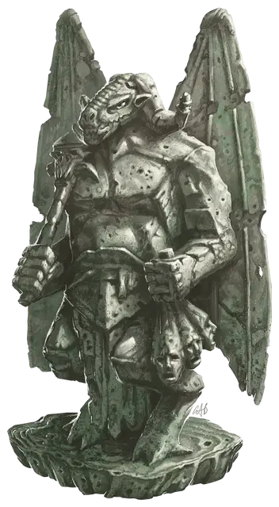

Статуэтка Оркуса
Orcus Figurine
Чудесный предмет

Вырезанная из окаменевшего сердца огра, эта серая статуэтка изображает Демонического Князя Нежити в чудовищных подробностях, сжимающий в одной руке жезл с черепом, а в другой держащий за волосы три отрубленные головы. От статуэтки пахнет разлагающейся плотью, и этот запах можно ощутить на расстоянии 5 футов.
Статуэтка представляет собой Крошечный предмет с КД 17, 3 хитами и иммунитетом ко всем типам урона, кроме урона излучением. Заклинание обнаружение зла и добра [detect evil and good] или подобная магия показывает, что статуэтка была осквернена. Пока у неё есть хотя бы 1 хит, статуэтка обладает следующими магическими свойствами:
- Нежить в пределах 30 футов от статуэтки не может быть изгнана.
- Нежить в пределах 30 футов от статуэтки не может быть возвращена к жизни/воскрешена.
- Существо, которое держит эту статуэтку во время молитвы Оркусу в течение по крайней мере 1 часа, имеет 10-процентный шанс призвать дымчатого аватара демон-лорда. Как только этот аватар призван, он не может быть призван снова в течение 30 дней. Аватар Оркуса имеет характеристики призрака [wraith] за исключением того, что он хаотично злой. Он атакует всех, кто не является нежитью, с кем сталкивается, и исчезает через 1 час или когда его хиты опускаются до 0.